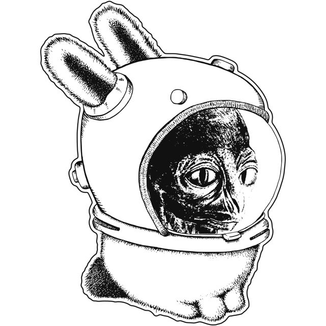

Apex is a modernized acme. Like acme, Apex is text first, mouse oriented, and has plumbing everywhere; it aims to be fast, simple, and restrained. Apex adopts acme's way of working, and then adds what modern software engineering workflows increasingly require: remoting, terminals, and web views. Apex ships as a single Mac app, implementing acme's user interface paradigm with modern touches and affordances. While Apex feels best with a three-button mouse, it is equally usable on a laptop with a trackpad.
Apex differs from acme in a few important ways:
Apex retains the essentials of acme's user interface:
Everything in a workspace (its columns, windows, terminals, and the programs running in them) is kept in a session, which is managed by a daemon. The app is merely a view of a session: closing the app's window leaves the session running, and attaching again restores it as it was. A daemon may hold many sessions; the app displays these as tabs.
% apex attach # attach to this machine's session % apex attach devbox/work # attach to session "work" on devbox, over ssh
When attaching to a remote session, nothing is copied: files stay where they are, and Apex runs its own small daemon on the remote machine to edit them.
A terminal in Apex is an ordinary window. Programs running in a
terminal (a shell, a build, a coding agent) can drive the editor
through the apex command, just as a script would: they can
open files, write to windows, and ask for the user's attention.
The apex command can do everything the mouse can. A
workspace can thus be set up by a script:
s=$(apex new-session work ~/src/apex) apex -session $s open README.md apex -session $s term new make watch
Programs can also attach to a session directly, using the libraries for Rust and Go, or through a bridge that speaks JSON. Such programs can provide plumbing rules, own windows, and respond to what is clicked in them.
Apex is implemented in Rust. The app runs on macOS; the daemon and
the apex command also run on Linux, where the app attaches
to them over ssh. To build the app:
% git clone https://github.com/mariusae/apex % cd apex % mac/build-app.sh
This produces target/Apex.app.